My first encounter with Snowfall was during my travel to Bishkek, the capital city of Kyrgystan. Kyrgystan is a beautiful landlocked country in Central Asia and my trip to Kyrgystan brought to me a whole new perspective.
The cuisines were full of flavour(friends used to translate Russian food menu for me).
Kyrgystan also hosts a lot of Indian students looking for a career in the medicine domain.
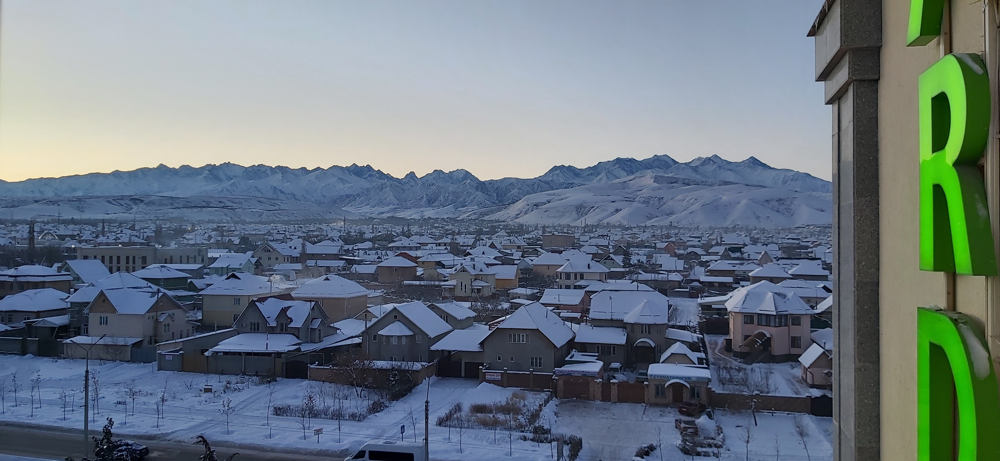
 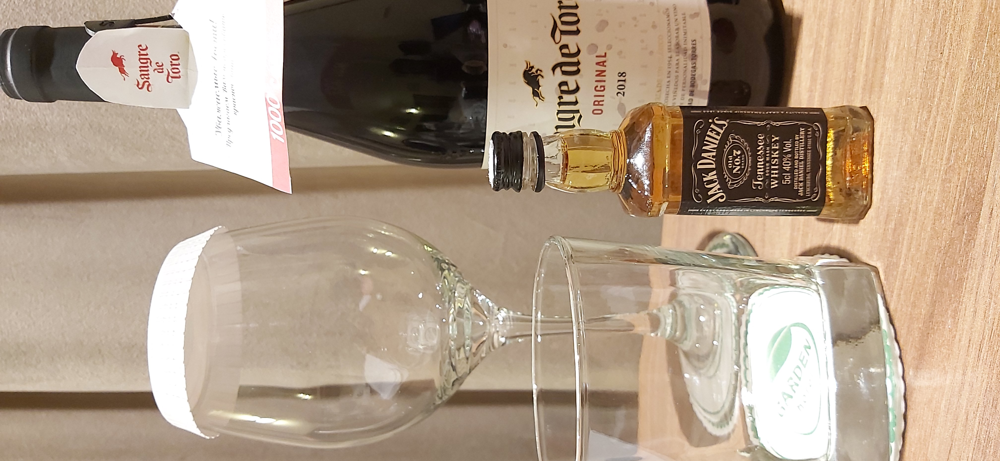
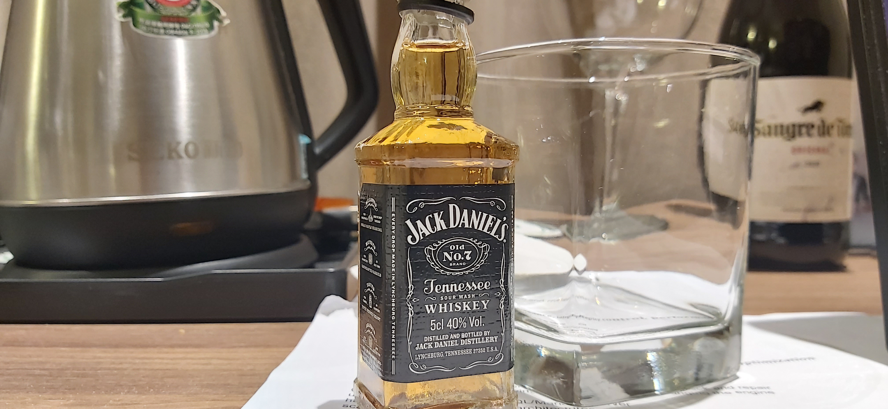
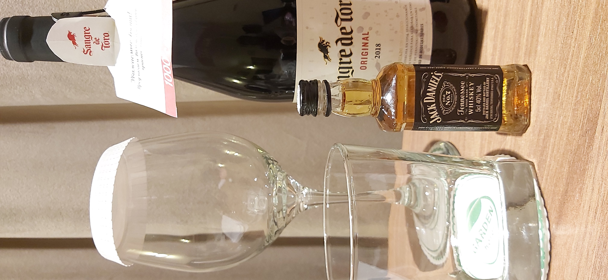
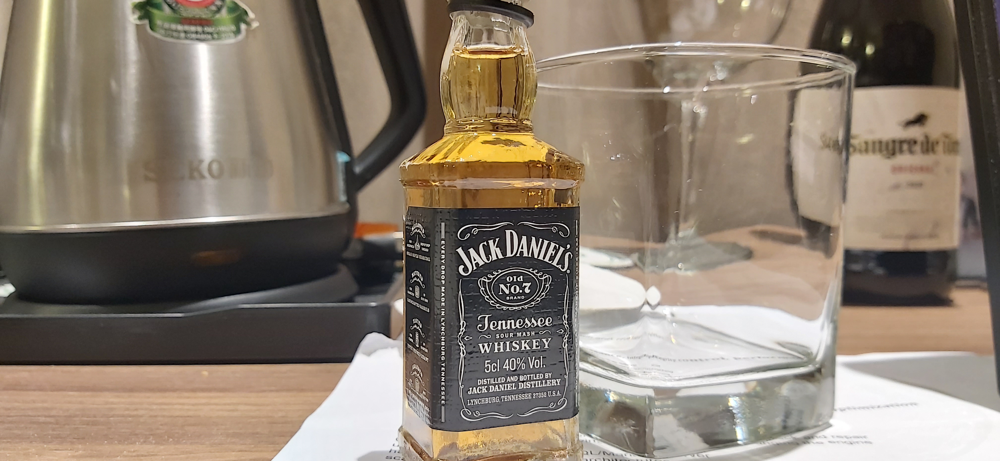

 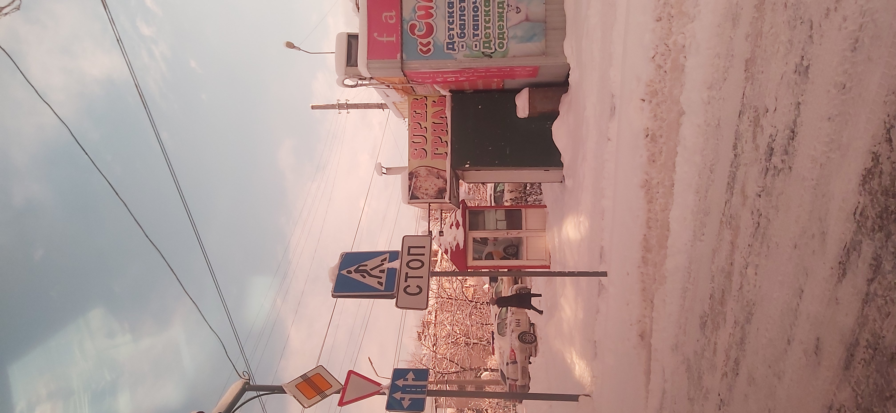
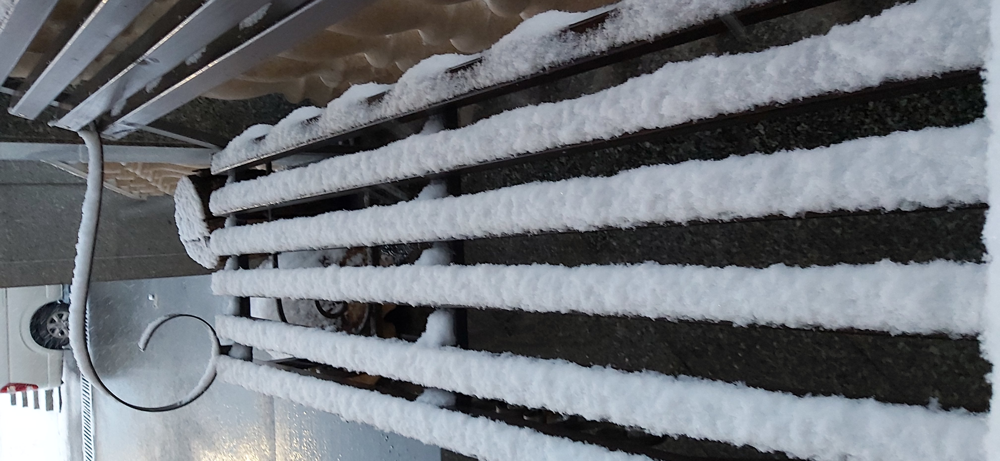
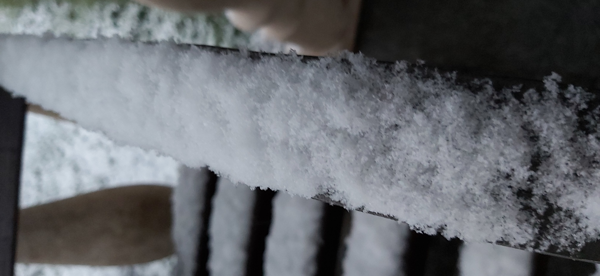
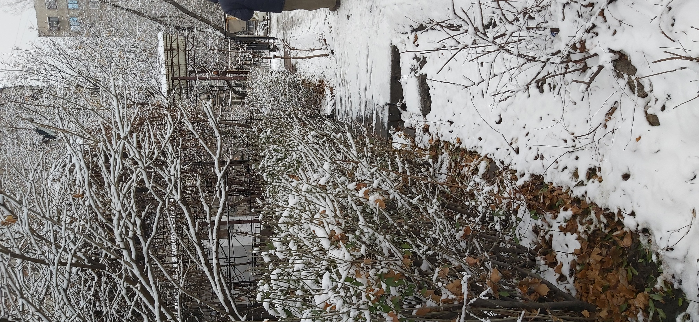
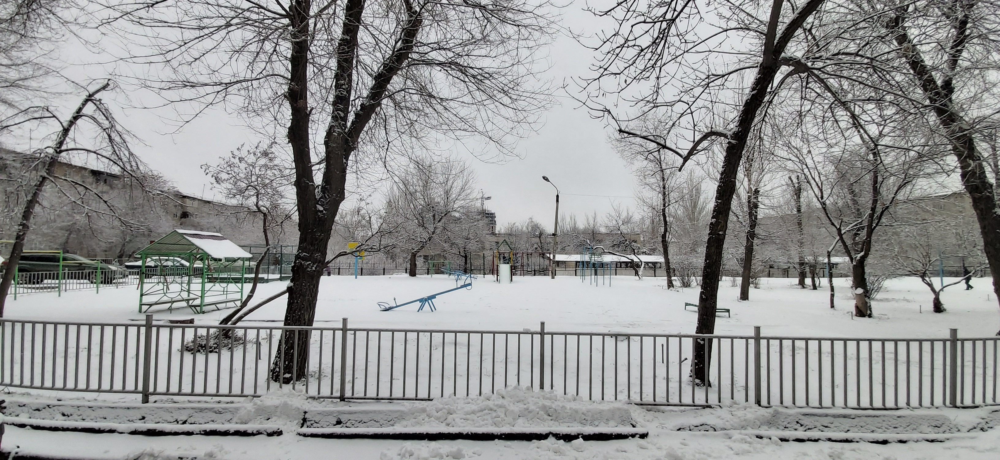
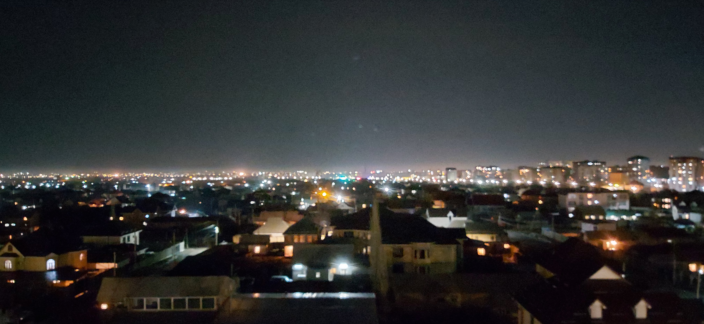
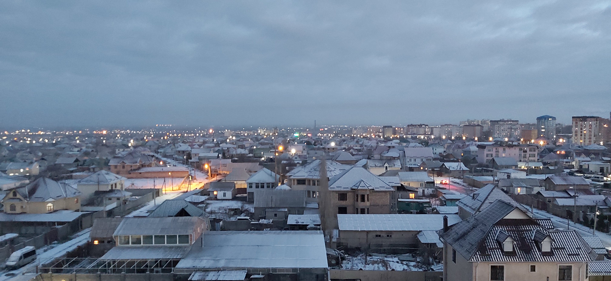
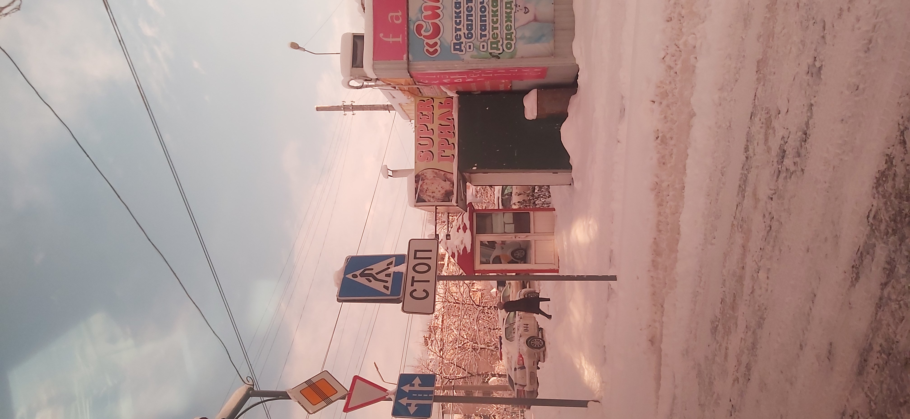
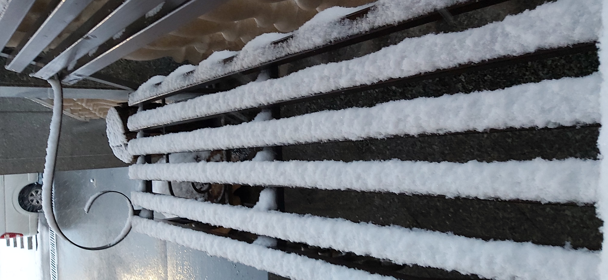
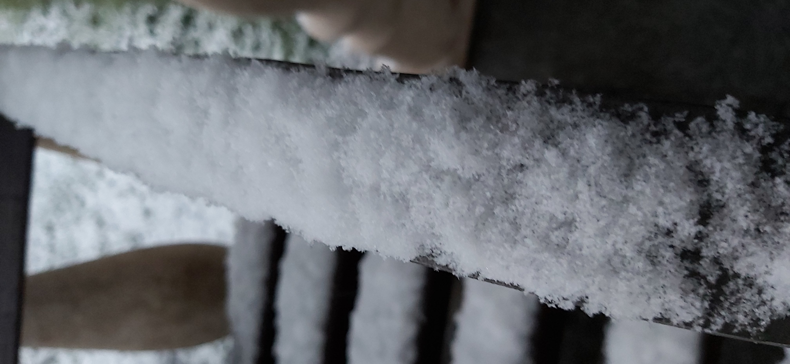
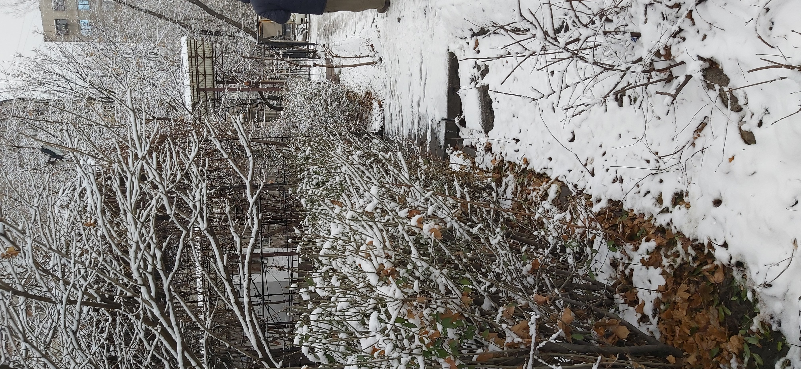
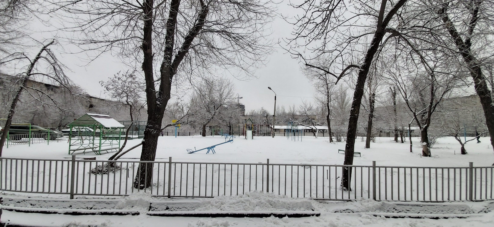
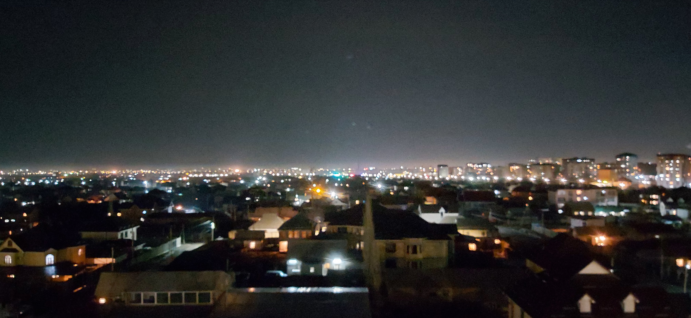
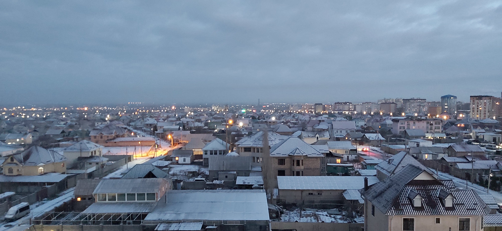